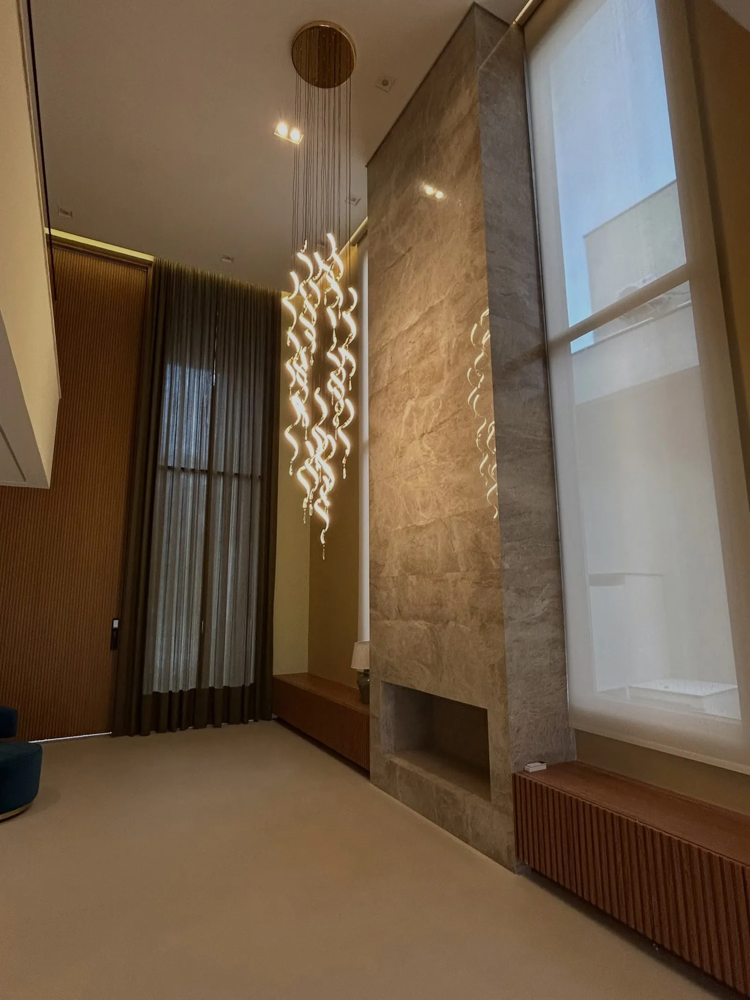
Cortinas, tapetes e persianas sob medida
Cada peça é escolhida com você e pensada para o seu ambiente. Também lavamos e fazemos a manutenção de cortinas e persianas de todas as marcas.
Pedir orçamento pelo WhatsAppNota 5,0 em 27 avaliações no Google
Loja na Vila São Francisco, São Paulo
O que a gente faz
Tudo sob medida, escolhido com você.
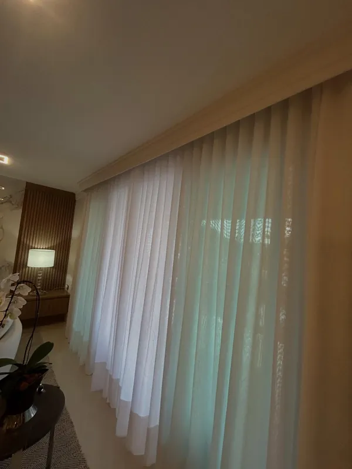
Tecido, cor, caimento e altura definidos para cada janela, do voil que deixa a luz entrar ao blackout para o quarto.
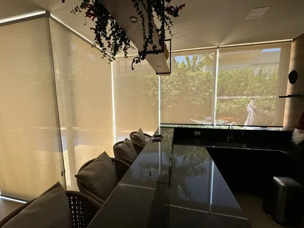
Persianas no tamanho exato de cada vão, com o nível de luz e privacidade que o ambiente pede.
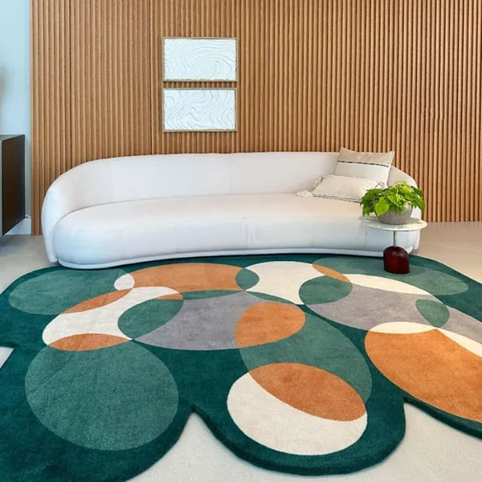
Tapetes no formato, no tamanho e nas cores que fecham a composição da sala, do quarto ou da varanda.
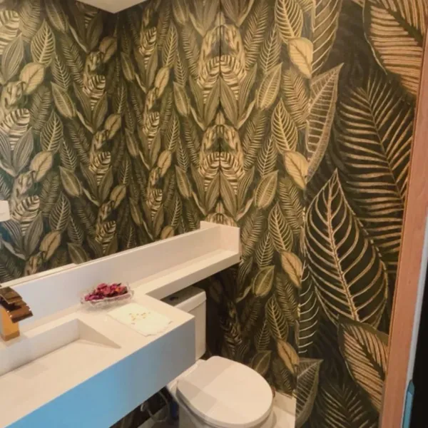
Estampas e texturas para mudar um ambiente inteiro ou só uma parede, escolhidas junto com você.
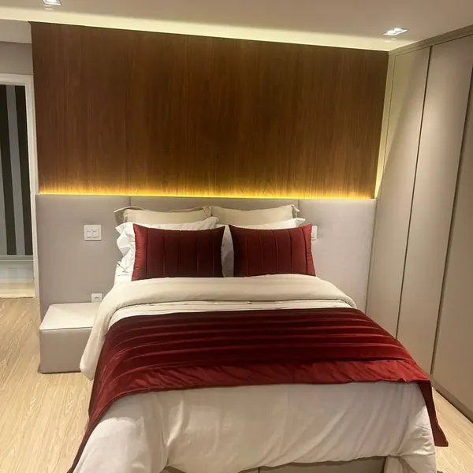
Roupa de cama, mantas e almofadas que conversam com as cortinas e o tapete do quarto.
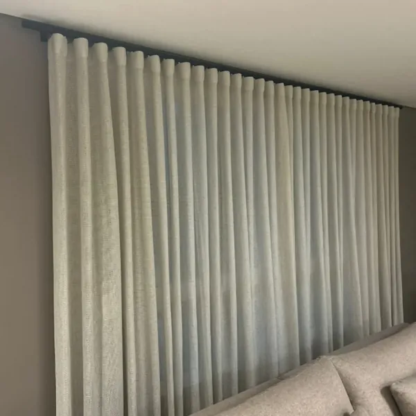
Lavagem e manutenção de cortinas e persianas de todas as marcas, inclusive as que não foram compradas aqui.
Ambientes que já passaram por aqui
Salas, quartos e varandas de clientes, com cortinas, tapetes e persianas da Medina Decor.
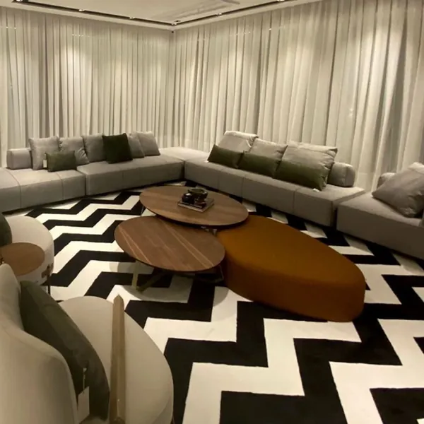
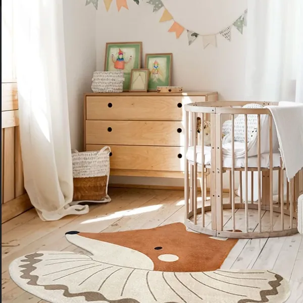
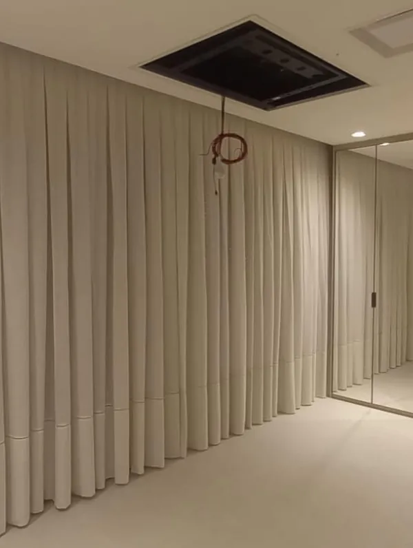
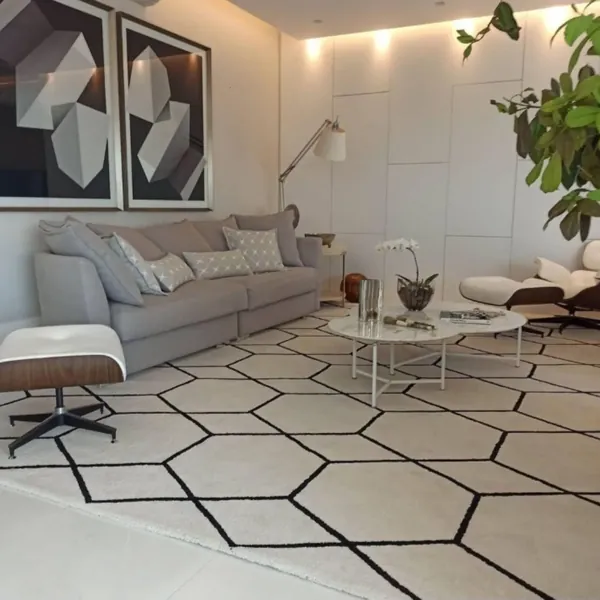
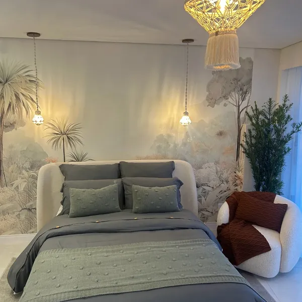
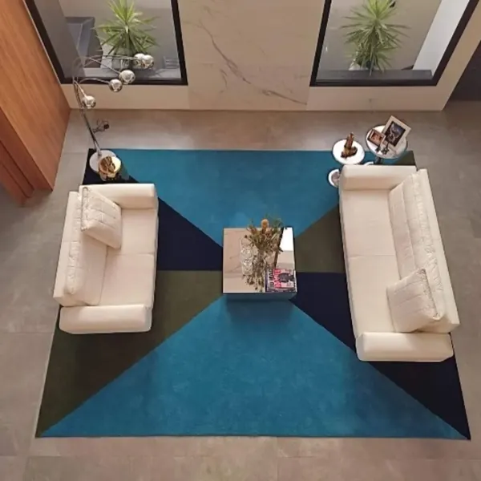
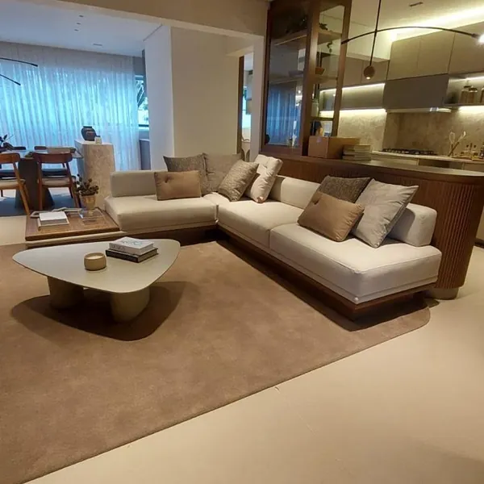
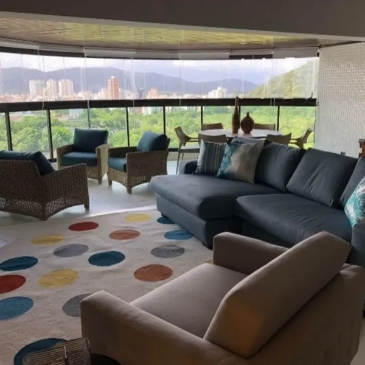
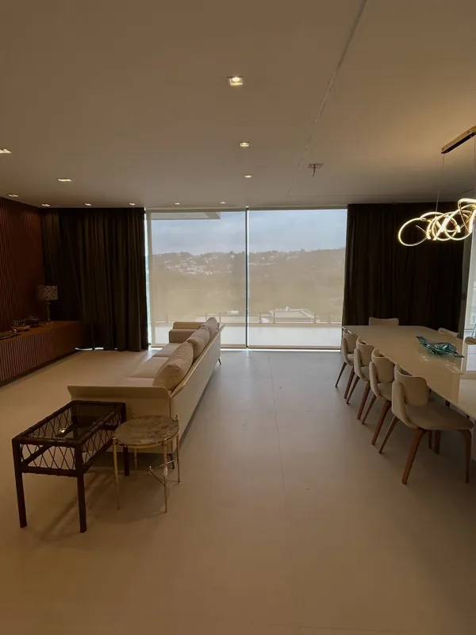
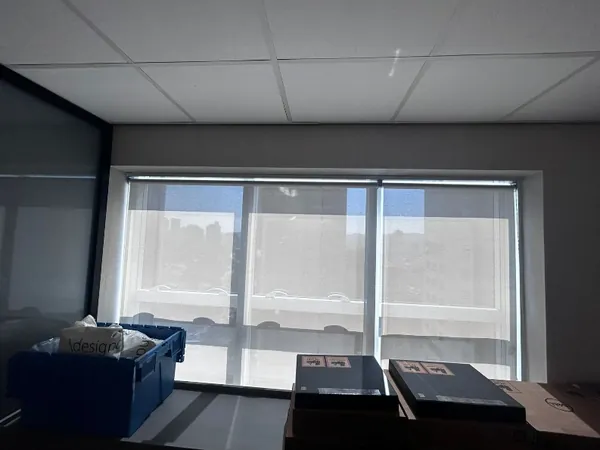
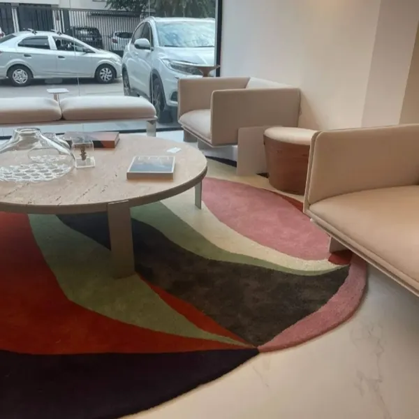
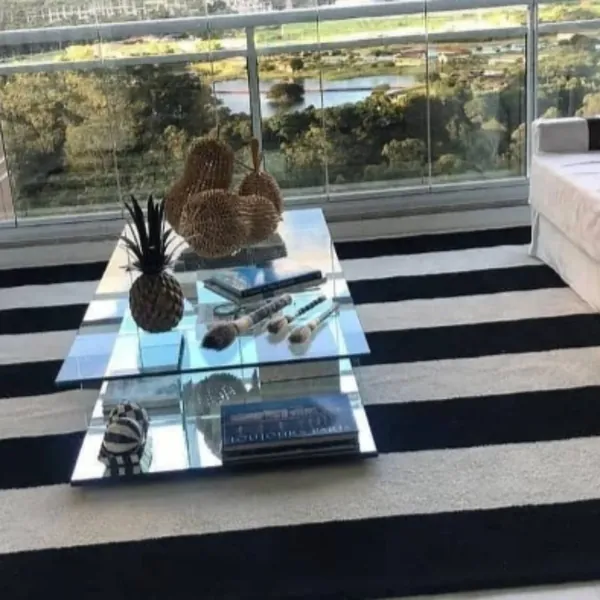
Quem já comprou com a gente
Nota 5,0 em 27 avaliações no Google.
-
Fomos muito bem atendidos pela equipe, Alessandra, Aline e Guilherme, desde o primeiro contato. A expertise da Aline é perfeita, entendeu os nossos desejos, sanou nossas …
Mariza Evaristo -
Entrei em contato com a loja Medida Decor, para fazer o projeto do quarto da minha filha e fui super bem atendida pela vendedora Aline, que montou todo o projeto e teve todo o cuidado e carinho para deixar tudo nos mínimos detalhes. Eu e meu esposo amamos o projeto!
Natalia Pegoraro -
Muito feliz com o resultado das persianas e das almofadas, todo impecável. Muito obrigado
Leonardo -
A Aline é simplesmente incrível no que faz! Além de ter um olhar impecável e ideias maravilhosas, trabalha com materiais de altíssima qualidade. Dá pra ver o carinho e a dedicação em cada detalhe. Recomendo de olhos fechados!
Daniela Marques -
Minha experiência na Medina Decor foi incrível!✨✨✨✨🙌🙌 Preços maravilhosos,produtos de excelente qualidade atendimento excelente e entrega dentro do prazo. Super indico!! …
Nena Nascimento -
Atendimento impar, profissionais competentes, dispostos a ouvir e entender a nossa necessidade! Produtos de qualidade! Super indico!
Dri Mellboa
Conte qual ambiente você quer mudar
Mande fotos e medidas pelo WhatsApp e receba o orçamento.
Mais ambientes no Instagram
Trabalhos recentes, tecidos novos e vídeos das instalações.
Venha ver os tecidos de perto
Medina Decor
R. Dr. Teodoro Quartim Barbosa, 66
Vila São Francisco, São Paulo - SP
CEP 05352-050
Horário
- Segunda a sexta
- 10h às 18h
- Sábado
- 10h às 14h
- Domingo
- Fechado
Telefones
WhatsApp (11) 91012-2336
Fixo (11) 3766-9328